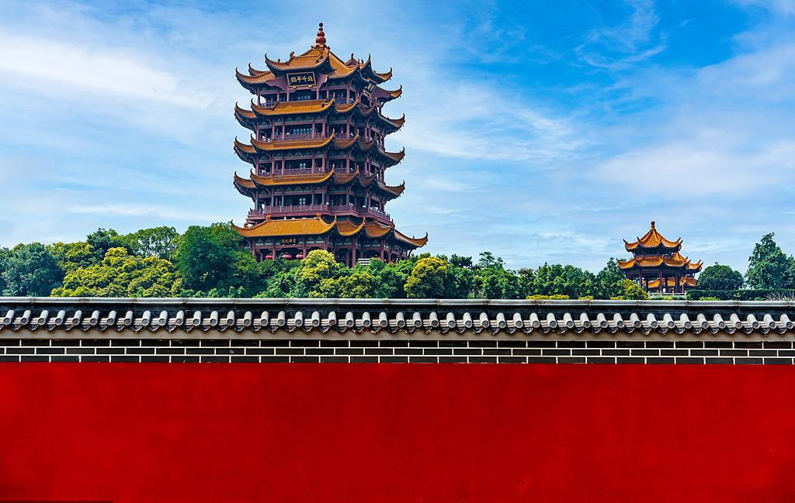

黄鹤楼
票价：全票70元/人，半票35元/人
开放：8:30-18:00（17:00停止售票，17:20停止入园）,19:30-22:00（21:30停止入园）
电话：4007009798，4000270266
交通：乘坐10、61、401、402等路公交车至黄鹤楼站下车，或乘坐411、413、507等路公交车至阅马场站下车；或者乘坐地铁4号线至首义路站下车，步行约1.4公里到达
地址：湖北省武汉市武昌区蛇山西山坡特1号
详情介绍:
黄鹤楼是中国四大名楼之一，坐落于湖北省武汉市武昌蛇山西端，紧邻长江，素有“天下江山第一楼”之称。始建于三国东吴时期（公元223年），最初为军事瞭望台，后历经唐、宋、元、明、清多次毁建，现存建筑为1985年仿清代形制重建，兼具历史韵味与现代工艺。
作为武汉城市精神的象征，黄鹤楼不仅是建筑奇观，更是中华文脉的立体诗篇，承载着1800年的岁月回响。
建筑特色与文化符号:
主楼高51.4米，五层飞檐攒尖顶，通体覆金色琉璃瓦，72根立柱支撑，形如展翅黄鹤。内部以“诗画江山”为主题，各层陈列历代诗词题刻、壁画及黄鹤传说浮雕。登顶可俯瞰长江与武汉三镇，龟山电视塔、武汉长江大桥尽收眼底。楼前铜铸黄鹤雕像与千禧钟，成为游客必打卡地标。
历史人文积淀:
黄鹤楼因崔颢“昔人已乘黄鹤去”一诗名扬天下，李白、白居易、陆游等文人墨客均在此留下诗篇，被誉为“唐诗的活化石”。景区内设有诗碑廊，镌刻历代名家作品。传说吕洞宾曾在此驾鹤飞升，道教文化亦为其增添神秘色彩。
景区布局与周边景观:
核心区占地15公顷，包含白云阁（展示楚文化）、搁笔亭（纪念李白搁笔典故）、岳飞广场等景点。西侧与武汉长江大桥相连，形成“楼桥相映”的壮丽画面。夜间的灯光秀以楼体为幕，演绎荆楚千年故事。
推荐路线：
主楼登高→诗碑廊品鉴→白云阁观展→长江大桥漫步。春赏樱花、秋览江景为最佳时节。地铁5号线司门口站出站即达，建议预留2-3小时深度游览。
文化互动与特色活动:
景区近年推出《夜上黄鹤楼》光影演艺，通过灯光、投影与真人表演，重现仙人驾鹤、诗词雅集等场景，夜间游览体验更富穿越感。楼内设文创商店，可购买黄鹤楼雪糕、诗词书签、编钟模型等特色纪念品，融合传统文化与现代设计。
科技赋能游览:
主楼内增设AR互动屏，游客扫描壁画可触发动画，直观了解“辛氏酒家遇仙”“李白搁笔”等传说。部分展区利用全息投影还原古代诗人对谈场景。
黄鹤楼不仅以古建筑闻名，更通过多元体验与城市生活深度融合，成为传统与现代交织的文化地标。若时间充裕，建议结合江滩夜景或轮渡游览，感受“江城”立体风貌。